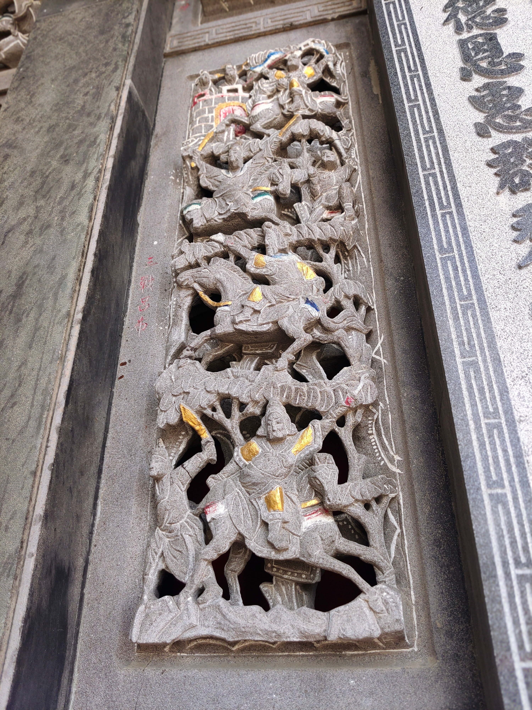

三英戰呂布
會說話的石頭

圖 三英戰呂布
董卓得知華雄被斬，再派飛將軍呂布出戰。呂布一出戰，連斬大將方悅、穆順，殺傷武安國、公孫瓚。張飛見公孫瓚打不過呂布，連忙接替公孫瓚，大喊：「三姓家奴休走！燕人張飛在此！」之後連鬥五十餘回合，不分勝負。（此為毛宗崗本，有些早期版本為張飛槍法漸漸散亂，呂布越添精神。）[1]關羽見到之後，提著82斤重的青龍偃月刀與張飛夾攻呂布，再戰多三十多回合。劉備也提著雙股劍，拍馬上前幫助張飛、關羽。 就此三個人圍住呂布不停廝殺，十八路人馬都看得呆了。不久，呂布開始感到力不從心，飛馬撤退，但三人追趕著呂布不肯捨，直至遇見董卓的兵馬才撤退。 《三國志》有記載，斬華雄破呂布是孫堅所為，華雄是於陽人被斬殺，呂布之敗的原因是董卓派呂布與胡軫來守，呂布與胡軫不和而發生惟亂，所以胡軫被孫堅擊退，後來孫堅與董卓開戰，董卓敗走，後來孫堅再進擊去洛陽宣揚城門，擊退呂布。 自從《演義》記載了「溫酒斬華雄」及「三英戰呂布」之後，此二事便廣泛流傳至今。
資料來源： https://reurl.cc/3Mjeb9